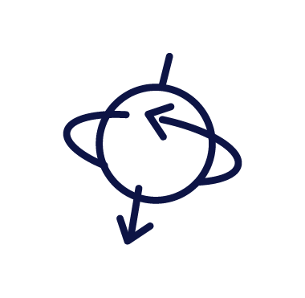

Little
explorer
or
young
scientist?


Little explorer?
Handheld + stand
R 2,980

Young scientist?
On the desk, 3 lenses
R 5,580
MX2-AS Ages 4-11MT3-2 Ages 11-16
Screen4.3-inch7-inch
Zoom1600× digital400× optical
Slides5 prepared10 + make your own
Share toTablet, laptopTablet, laptop, TV
PriceR 2,980R 5,580
Which one's yours?
Links in bioFree delivery over R 1,500